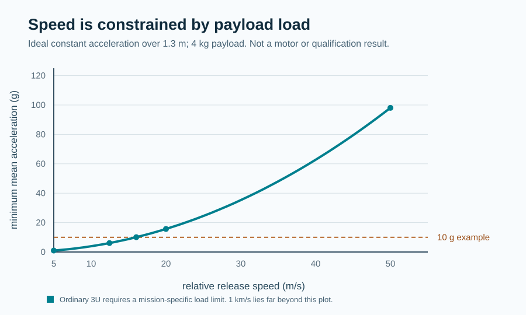
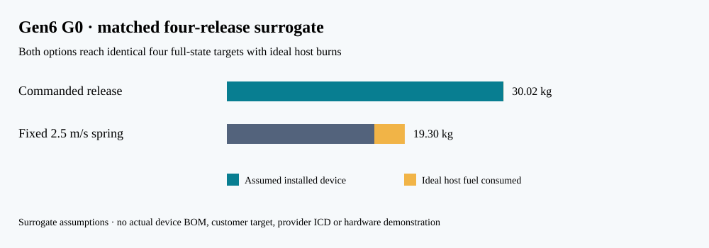
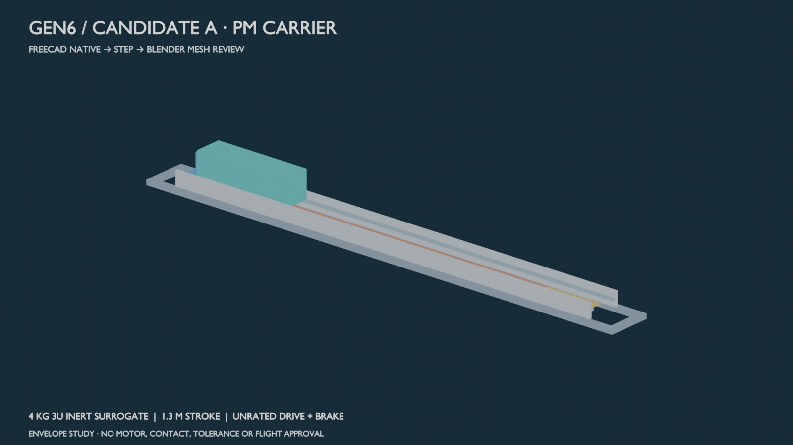
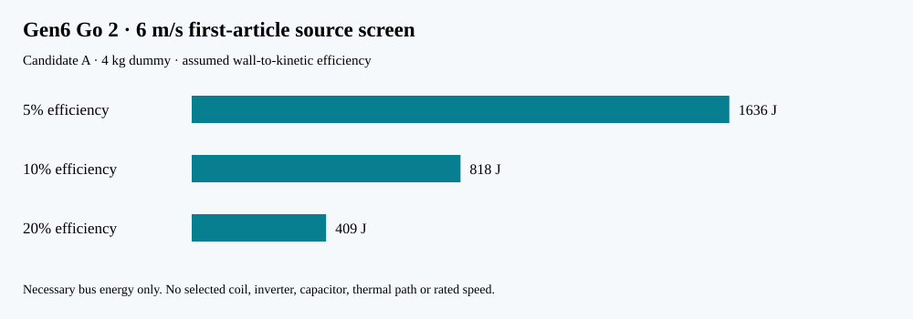
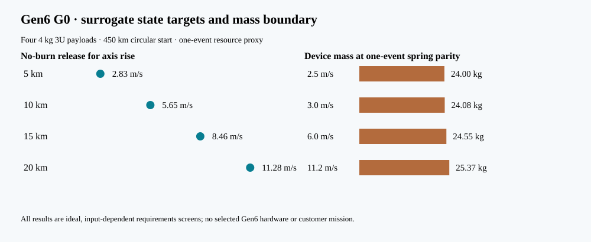
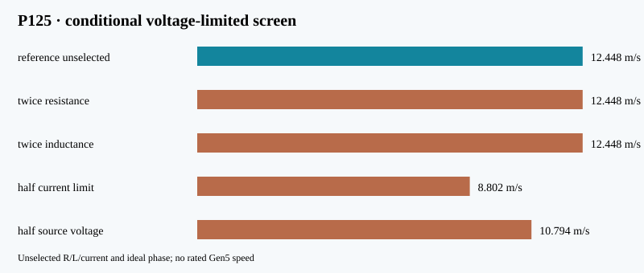
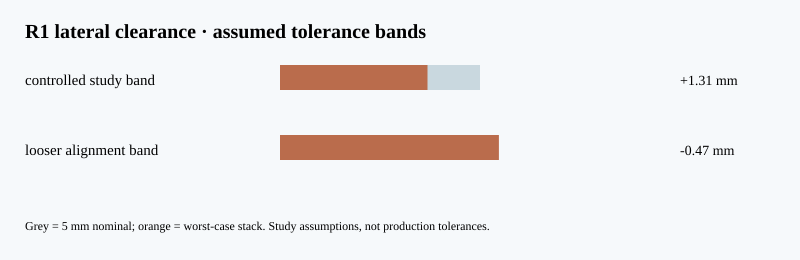
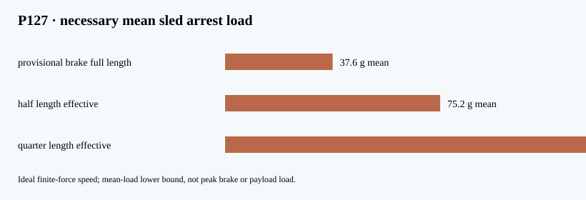
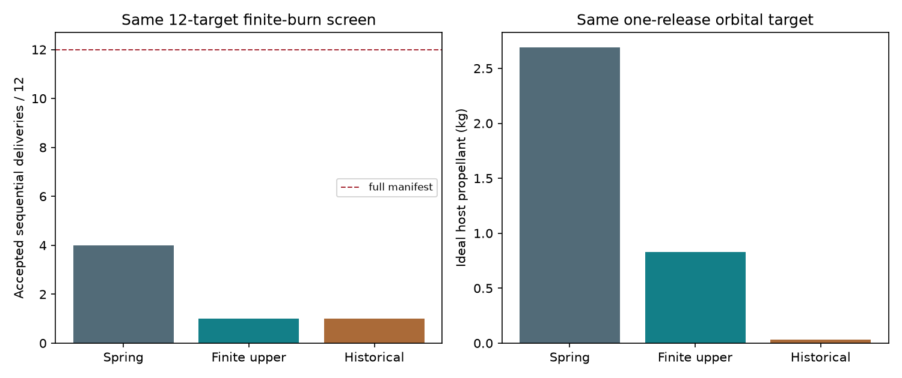
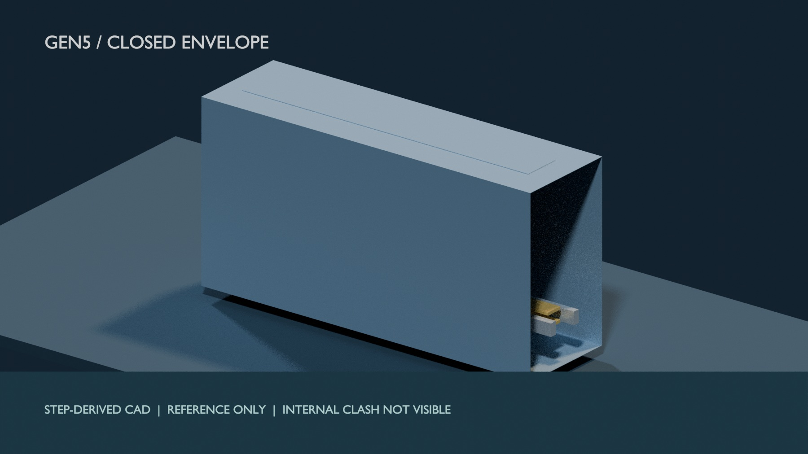

Close the whole machine, not just the gap.
Feed, retain, release, arrest.
Design actual transfer actuation, launch restraints, contacts, clearances, jam and abort states. Re-run exact-solid travel and tolerance checks.
Rate the installed drive.
Select winding, inverter, storage, harness and thermal hardware. Recalculate force across handover, gross energy, losses, brake duty and mass.
Name the interfaces.
Use a specific spacecraft and provider ICD for loads, inhibit, envelope, electromagnetic exposure and deployment constraints.
A perfect motor alone cannot close this trade.
In the one-event reference, even zero host propellant use leaves Gen5 needing a device at or below 74.659 kg to tie the spring-class device plus fuel. The current model is 126.562 kg. This bound says nothing about an achievable new motor or a complete mission.
Start with orbital accuracy and payload loads.
The P124 requirements screen turns a declared 450 km orbital-state target into an ideal tangential velocity margin. At a 1.3 m stroke, 1 km/s implies about 39,220 g and 2 MJ of payload kinetic energy for an ordinary 4 kg 3U. That high-end objective is separate research; a first prototype needs a named mission, allowed load and measured command band.

Both options can reach the four target states.
For two 1U and two 3U surrogate payloads, ideal host transfers let both commanded release and spring plus host hit all four full position and velocity targets at the common epoch. Commanded release saves 3.28 kg of modeled host fuel but carries a 14 kg assumed device premium. The installed-mass case remains adverse. A 0.1 m/s release-speed error moves the one-day terminal position roughly 25–27 km; no delivery accuracy has been validated.

Two CAD envelopes, neither selected.
Editable FreeCAD and STEP review assemblies compare a captured permanent-magnet carrier with a captured conductive-plate carrier for a passive 4 kg 3U dummy. Both clear five nominal positions. The frame, guide and carrier material proxy is already about 9.9 kg, leaving only about 9.3 kg under the narrow matched-mission parity screen for every missing drive, source, brake and restraint item. At 6 m/s, ideal moving energy is about 82 J; motor, contact and brake ratings remain open.
The magazine and handoff remain undesigned. The new feeder trade starts with fixed side cassettes and compares lead-screw, spring/escapement, pantograph and other simple indexing mechanisms; it does not select a working feed.

Turn the ideal shot into a source test.
At a hypothetical 10% end-to-end efficiency, a 6 m/s shot of the inert 4 kg first article would need at least 818 J from the bus. An ideal 96-to-72 V capacitor swing implies 0.406 F before ESR, current, thermal or aging margins. The proposed two-gate speed measurement also needs timing and baseline calibration. No source, winding, inverter or sensor has been selected or rated.

Design the first test around an actual delivery job.
A four-payload, 450 km surrogate gives 5–20 km immediate semimajor-axis targets and an ideal 2.795–11.149 m/s prograde increment range. A proposed 3–6 m/s single-dummy rig would measure release behaviour, but cannot yet prove a four-shot service. The one-event spring/host mass proxy leaves about 24–25 kg of device allowance under its assumptions. G0 remains partial: a buyer, payload, provider and full-state campaign are still missing.

Quantify the limits before selecting hardware.
These three checks use the evaluated finite-force case and a separate R1 geometry candidate. They expose sensitivity and necessary loads; none is a selected drive, flight mechanism or measured release.



Compare at the same mission boundary.
A spring dispenser, host manoeuvre, onboard propulsion, transport service and VOLLEY must be evaluated with the same payload, epoch, orbit, full manifest, host resources and installed-system burden. Numeric convergence and uncertainty belong beside the result.


Keep the academic claim precise.
The 12 October Go 3 update incorporates the P130–P132 future-work evidence into an 18-page IEEE-formatted manuscript, a 20-page college report and an updated 26-slide deck. The Gen5 result remains a negative computational design finding. The claim and gate review records what each artifact supports and what still blocks a final freeze.
Gen5 review record
Report, results, limits, presenter deck and the failed selection decision.
Companion evidence
Reproducible computational study. No IEEE venue has been selected or peer review completed.
Alternatives and future work
Unselected R1 and other concepts remain separate from the evaluated Gen5 baseline.
A build, instrumented release testing, provider approval and independent technical review remain future activities. No simulation alone supplies those outcomes.